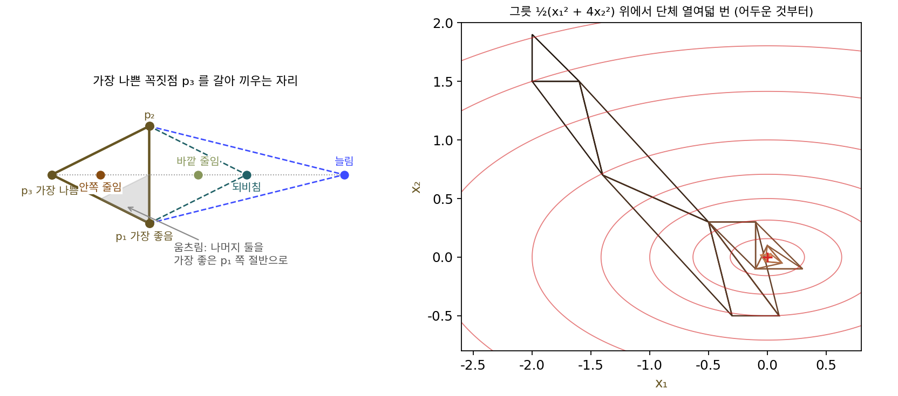
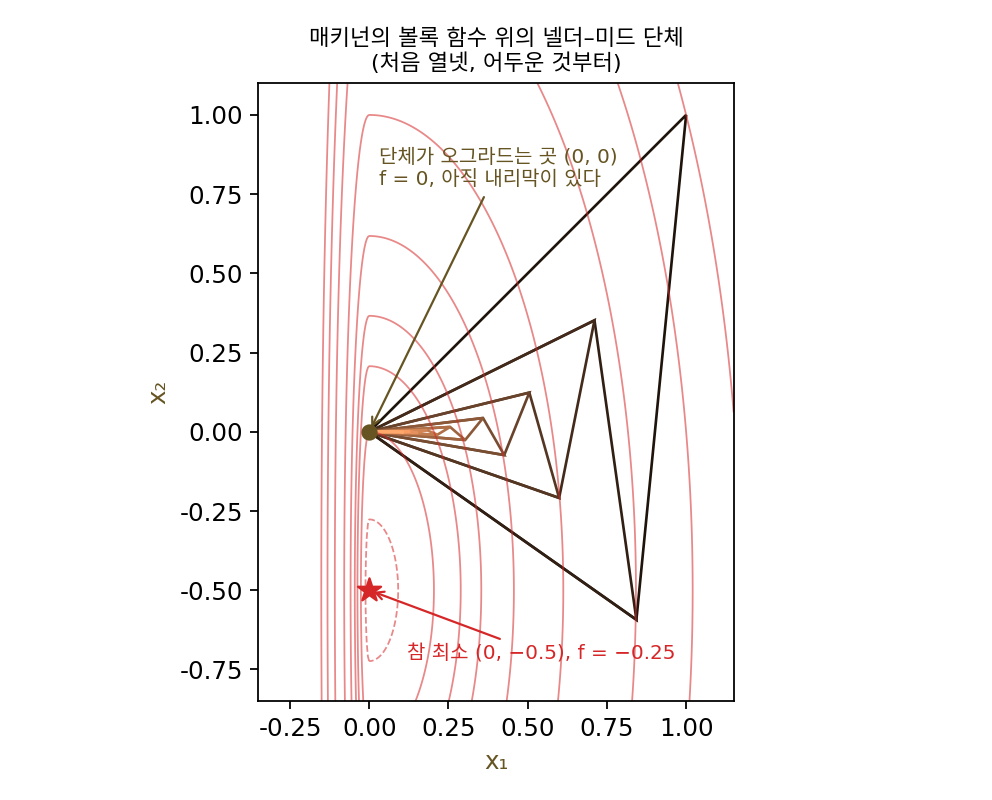
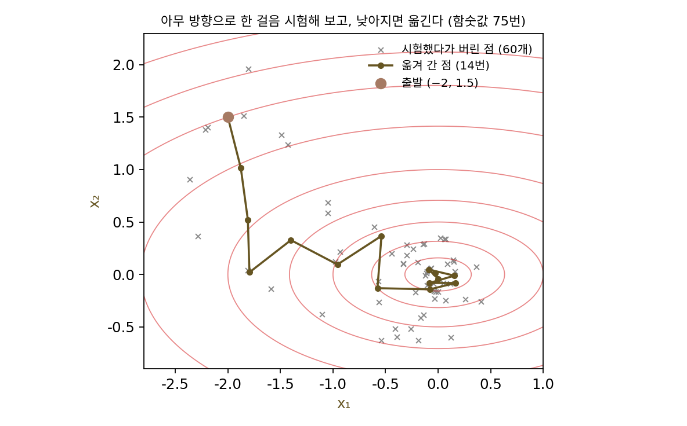
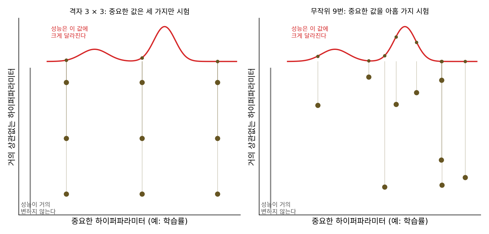
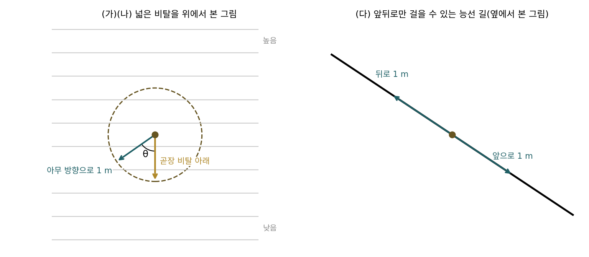
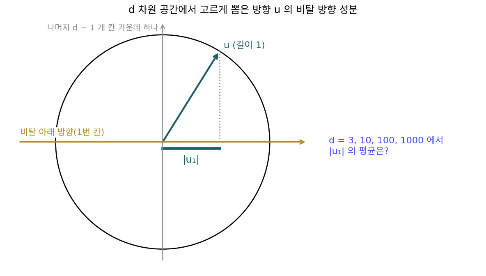
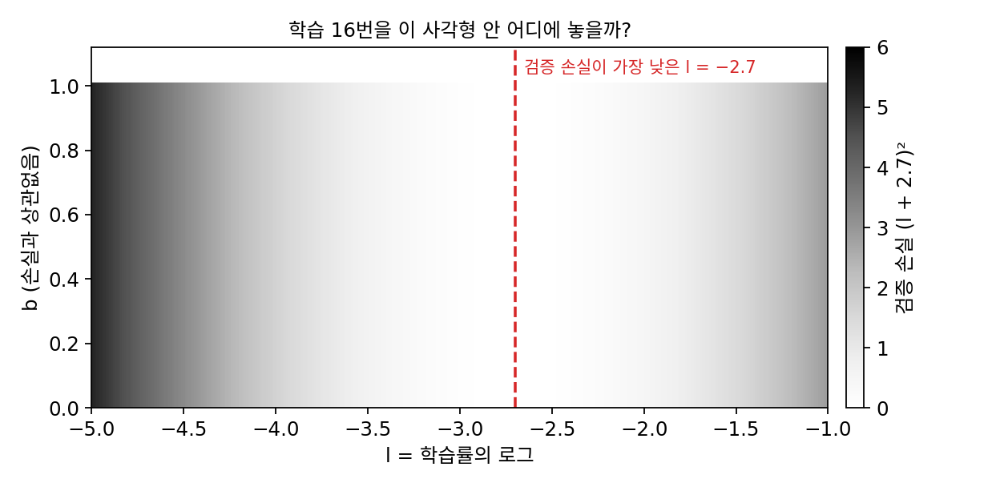

무작위 탐색: 값만 비교해서 내려가기
유한 차분은 스텝마다 함숫값을 변수 수보다 한 번 더 계산해야 하고, 간격을 잘 골라야 한다. 함숫값에 노이즈가 섞이면 키퍼와 울포위츠가 겪었듯 노이즈가 작은 간격으로 나뉘어 커지기 때문에 더 어렵다. 지도 없이 안개 낀 산을 내려가는 사람은 그래디언트를 계산하지 않고, 한 발 내디뎌 보고 낮아졌으면 그대로 가고, 높아졌으면 물러선다. 값의 크기를 나누지 않고 「더 낮은가?」만 묻는 셈이니 간격을 고를 걱정도 줄어든다. 이렇게 비교만 하면서도 바닥에 닿을 수 있을까? 닿는다면 얼마나 빨리?
역사: 순무 연구소의 두 통계학자
비교만으로 내려가는 방법 가운데 가장 널리 쓰인 것은 영국의 두 통계학자가 만들었다. 1962년 영국 화학 회사 ICI 의 윌리엄 스펜들리(William Spendley)와 동료들은 공장 공정의 조건을 조금씩 바꿔 가며 더 나은 조건을 찾는 방법을 냈다. 변수가 n 개면 점 n + 1 개로 이루어진 도형(변수가 둘이면 삼각형)을 단체(simplex)라 하는데, 가장 나쁜 꼭짓점을 반대쪽으로 뒤집어 단체를 굴려 가는 방법이었다. 단체의 모양은 늘 그대로였다.
국립 채소 연구소(National Vegetable Research Station)에서 일하던 존 넬더(John Nelder)는 1963년 학회에서 스펜들리의 발표를 듣고, 단체의 모양이 지형에 맞춰 바뀌어야 한다는 생각을 했다. 그는 동료 로저 미드(Roger Mead)와 「전날 저녁에 떠올린 생각을 다음 날 아침 서로에게 시험해 보는」 토론을 거듭했고, 긴 내리막에서는 단체가 길게 늘어나고 바닥 근처에서는 오그라드는 방법을 만들었다. 1965년 『컴퓨터 저널(The Computer Journal)』에 실린 「함수 최소화를 위한 단체법(A Simplex Method for Function Minimization)」이다. 그래디언트는 한 번도 쓰지 않고, 꼭짓점들의 함숫값을 비교만 한다.

넬더는 뒤에, 논문이 나오자 비교만 하는 방법은 가망이 없다고 믿고 있던 몇몇 「전문 최적화 연구자」들이 놀랐다고 회고했다. 연구소 주소도 놀라움을 샀다고 하는데, 미국의 한 유명 연구소 사람들은 순무 농사꾼들이 셈을 할 줄 아는지 의심하는 눈치였다는 것이다(그 연구소가 어디인지는 밝혀지지 않았다). 넬더–미드 방법은 이름이 같은 단치그의 선형계획 단체법과는 관계가 없고, 지금도 MATLAB 의 fminsearch 와 SciPy 의 minimize(method='Nelder-Mead') 로 쓰인다. 다만 1998년 켄 매키넌(Ken McKinnon)은 이 방법이 바닥이 아닌 곳으로 오그라들어 멈추는 볼록 함수를 만들어 보였다. 넬더 자신도 2000년의 인터뷰에서 「수학자들은 수렴을 증명할 수 없어서 싫어하고, 엔지니어들은 자주 잘 통하니까 좋아하는 것 같다」고 말했다.


가장 나쁜 꼭짓점을 반대편으로 뒤집는 거면 저도 한 시간이면 짜겠어요. 이게 논문까지 될 일이었어요?

스펜들리의 단체는 모양이 늘 그대로였다고 했죠. 크기가 정해진 삼각형으로 긴 골짜기를 내려가면 어떻게 될까요?

음, 삼각형이 크면 골짜기 바닥 근처에서 뒤집기만 되풀이할 것 같고, 작으면 긴 내리막을 아주 오래 굴러가겠네요.

넬더와 미드가 늘이고 줄이는 규칙을 더한 게 그 때문이에요. 그런데 그 규칙이 늘 바닥에 닿는다고 증명할 수는 없었어요. 1998년에는 바닥이 아닌 곳에서 오그라들어 멈추는 볼록 함수까지 나왔으니까요.

그런데 왜 아직 SciPy 에 들어 있어요? 증명도 없는데요.

넬더 말대로 자주 잘 통하니까 쓰는 거겠지. 그런데 선생님, 얼마나 잘 통하는지는 잴 수 있지 않아요? 비교만 하는 규칙이 그래디언트를 아는 경사하강보다 함숫값을 몇 번 더 쓰는지 세어 보면요.
그릇 위에서 아무 방향으로 한 스텝
넬더–미드보다 더 단순한 규칙으로 비교만의 힘을 재 보자. 같은 결과를 손으로 따라갈 수 있도록 변수가 둘이고 바닥이 (0, 0) 인 그릇 f(x) = ½(x₁² + 4x₂²) 를 고른다. x₂ 방향이 x₁ 방향보다 네 배 가파른 길쭉한 그릇이고, 그 위에서 쓸 규칙은 이렇다. 지금 자리 x 에서 아무 방향이나 고른 길이 1인 방향 u 로 스텝 길이 α 만큼 간 점을 시험해 보고, 함숫값이 줄었으면 옮기고 아니면 그 자리에 머문다. 열 번 내리 실패하면 스텝 길이를 반으로 줄인다. (−2, 1.5) 에서 f = 6.5, α = 0.5 로 출발해 처음 몇 번을 적으면 다음과 같다(무작위 씨앗 1).
| 시도 | 방향 u | 시험한 점 | f | 결과 |
|---|---|---|---|---|
| 1 | (0.388, 0.922) | (−1.806, 1.961) | 9.3213 | 버림 |
| 2 | (0.246, −0.969) | (−1.877, 1.015) | 3.8236 | 옮김 |
| 3 | (0.897, 0.442) | (−1.429, 1.236) | 4.0781 | 버림 |
| 4 | (−0.679, 0.734) | (−2.216, 1.383) | 6.2793 | 버림 |
| 5 | (0.778, 0.628) | (−1.488, 1.329) | 4.6411 | 버림 |
셋째 시도는 오른쪽으로 갔으니 바닥 쪽인데도 버려졌는데, 둘째 시도로 이미 3.8236 까지 내려와 있었고 그보다 낮지 않았기 때문이다. 이렇게 시험해 보고 대부분 버리면서도, 함숫값을 75번 계산하자 f 가 0.001 아래로 내려갔다. 그사이 실제로 옮긴 것은 14번이고, 시험한 점의 19% 만 받아들여졌다. 비교를 위해 같은 그릇을 그래디언트를 아는 경사하강(학습률 0.2)으로 내려가면 18스텝이 걸린다. 그 그래디언트를 전진 차분으로 추정한다면 스텝마다 함숫값을 세 번 계산하므로 54번쯤이다. 변수가 둘인 그릇에서는 그래디언트를 전혀 쓰지 않은 규칙이 크게 뒤지지 않는다.
이렇게 그래디언트를 추정하지 않고 무작위로 고른 후보의 함숫값을 지금 값과 비교만 하며 나아가는 방법을 무작위 탐색 (아무 데나 시험해 보고 나으면 옮기기 / random search)이라 한다. 위 규칙은 그 가운데 방향을 무작위로 고르는 꼴이다.
규칙에는 함숫값의 크기도, 두 값의 차이도 들어가지 않고, 쓰는 것은 「낮아졌나」라는 예·아니요 하나뿐이다. 그래서 함숫값이 계단 모양이어도, 단위가 제각각이어도 그대로 쓸 수 있다.

변수가 둘일 때는 이 정도로 충분했다. 변수가 열 개, 백 개로 늘어도 그럴지는 아래 문제에서 따져 보자.
ML에서: 하이퍼파라미터는 격자보다 무작위로
학습률, 가중치 감쇠, 층 수 같은 하이퍼파라미터(학습 전에 사람이 정하는 설정값)를 고르는 일은 값만 돌려주는 상자를 내려가는 일과 같다. 설정 하나를 넣으면 학습을 한 번 돌려 검증 성능 하나가 나온다. 오래 쓰인 방법은 격자 탐색으로, 학습률 후보 셋, 가중치 감쇠 후보 셋을 정해 아홉 가지 조합을 모두 돌린다.
제임스 베르그스트라(James Bergstra)와 요슈아 벤지오(Yoshua Bengio)는 2012년 논문 「하이퍼파라미터 최적화를 위한 무작위 탐색(Random Search for Hyper-Parameter Optimization)」을 냈다. 그들은 같은 횟수라면 격자의 점 대신 무작위로 뽑은 점을 돌리는 편이 낫다는 것을 실험과 이론으로 보였다. 신경망에서는 같은 범위를 무작위로 탐색해 격자 탐색만큼 좋거나 더 좋은 모델을 훨씬 적은 계산으로 찾았다. 사람의 손과 격자 탐색을 섞어 맞춘 심층 신뢰망과 견준 실험에서는, 하이퍼파라미터 32개짜리 공간을 무작위로만 탐색해 데이터 일곱 가지 가운데 넷에서 같은 성능, 하나에서 더 나은 성능을 냈다. 그들은 대부분의 데이터에서 성능을 크게 좌우하는 하이퍼파라미터가 몇 개뿐이고, 어느 것이 중요한지는 데이터마다 달라서 무작위로 뽑는 편이 낫다고 설명했다.

문제 4. 안개 속 비탈의 등산객
경사가 고른 넓은 비탈에 안개가 끼었다. 등산객은 아무 방향으로나 1 m 걸어 보고, 낮아졌으면 그 자리에 머물고 아니면 제자리로 돌아온다. (가) 한 번 시도해서 낮아질 확률은? (나) 낮아졌을 때, 1 m 를 곧장 비탈 아래로 걸었을 때 내려가는 높이의 평균 몇 배만큼 내려가는가? (다) 앞뒤로만 걸을 수 있는 좁은 능선 길이라면 (가)와 (나)는?

경사가 고르면 비탈 아래쪽 반원으로 가면 낮아지고 위쪽 반원으로 가면 높아져요. 경사가 얼마든 반반이라 (가)는 1/2 이에요.

경사가 가팔라도 1/2이야?
가파르면 낮아질 때 많이 낮아질 뿐이지, 낮아지는 방향은 그대로 반원이야.
낮아진 걸음들은 얼마나 내려갔을까요? 방향이 곧장 아래와 θ 만큼 틀어져 있으면요?
곧장 내려갈 때의 cos θ 배예요. 그럼 아래쪽 반원에서 cos θ 를 평균하면 되겠네요… 2/π = 0.637 이요.
그럼 낮아졌을 때는 평균 64% 만큼 내려가는 거네.
(다)의 좁은 능선 길이면요?

앞이나 뒤 둘뿐이라 확률은 그대로 1/2 이고, 낮아지면 곧장 내려간 거니까 1배예요.

넓은 비탈에서는 반은 헛걸음이고, 맞는 걸음도 3분의 2쯤만 쓸모 있네요. 능선 길처럼 갈 수 있는 방향이 하나뿐이면 맞는 걸음은 다 쓸모 있고요.
문제 5. 차원이 늘면 쓸모 있는 스텝은
문제 4의 규칙을 변수가 d 개인 고른 비탈에서 쓰는데, 방향 u 는 d 차원 공간의 모든 방향 가운데 고르게 뽑는다. (가) 낮아질 확률은 d 에 따라 바뀌는가? (나) 낮아졌을 때 곧장 내려간 높이의 평균 몇 배를 내려가는가? d = 3, 10, 100, 1000 에서 계산하라. (다) 이 규칙의 무작위 탐색으로 공 모양 그릇 ½|x|² 를 f = 1 에서 0.001 까지 내려가는 데 드는 함숫값 계산 횟수는 d 와 어떤 관계일까?

고차원에서는 아무렇게나 뽑은 방향이 거의 다 비탈 방향과 수직에 가깝다고 들었어요. 그러면 낮아지는 방향을 고를 확률도 차원이 늘수록 줄어들 것 같아요.
비탈 아래쪽과 위쪽을 가르는 경계는 몇 차원이든 무엇이죠?

비탈 방향에 수직인 평면이요. 그 평면이 공간을 반으로 가르니까… 낮아질 확률은 늘 1/2 이네요. 수직에 가깝다는 건 얼마나 낮아지느냐의 이야기였지, 낮아지느냐 마느냐의 이야기가 아니었어요.
그럼 (나)가 줄어드는 거겠다. 내려간 비율은 u 를 비탈 방향에 투영한 크기 |u₁| 의 평균이니까, 돌려 보면 d = 3 이면 딱 1/2, d = 10 이면 0.259, 100 이면 0.080, 1000 이면 0.025 야.
길이가 1인 벡터에 칸이 d 개 있으면, 칸 하나의 크기는 보통 얼마쯤일까요?
제곱의 합이 1 이고 d 개가 고르게 나눠 가지니까 한 칸의 제곱은 1/d, 크기는 1/√d 쯤이에요.
그 1/√d 를 (나)의 평균 비율과 견주면요?

평균 비율이 √(2/(πd)) 에 가까워져요. d = 1000 에서 둘 다 0.025 예요. 낮아지는 스텝은 여전히 반이지만, 낮아져도 거의 옆으로 걸은 거예요.
(다)는 직접 돌려 봤어요. d = 2 에서 49번, 10 에서 181번, 100 에서 2,077번이에요. d 로 나누면 25, 18, 21 이니까 함숫값 계산 횟수가 d 에 비례해요. 문제 4(안개 속 등산객)랑 같은 계산인데 차원만 늘리니까 이렇게 되네요. 파라미터가 백만 개인 신경망을 이렇게 내려가면 안 되겠어요.
문제 6. 열여섯 번으로 학습률 찾기
하이퍼파라미터가 둘이다. 하나는 학습률의 로그 l(−5 에서 −1 사이), 다른 하나는 b(0 에서 1 사이)인데, 검증 손실은 (l + 2.7)² 로 l 에만 달려 있고 b 와는 상관없다고 하자. 학습을 16번 돌릴 수 있다. (가) 격자 4 × 4 로 돌리면 서로 다른 l 을 몇 가지 시험하고, 가장 가까운 l 은 −2.7 과 얼마나 떨어지는가? (나) 두 하이퍼파라미터를 각자 범위에서 무작위로 16번 뽑으면? (다) 손실이 (l + 2.7)² + 4(b − 0.4)² 처럼 둘 다에 달려 있으면?

격자가 범위를 빈틈없이 덮으니까 더 공평하지 않아요? 무작위는 운이 나쁘면 한쪽에 몰릴 수도 있고요.
격자 4 × 4 에서 l 의 값은 실제로 몇 가지가 나오죠?

−5, −3.667, −2.333, −1 넷뿐이에요. 같은 l 에 b 만 네 번씩 바꿔 돌리는데 b 는 손실과 상관이 없으니까, 열여섯 번 가운데 열두 번은 이미 해 본 것을 다시 한 거네요. 가장 가까운 −2.333 도 −2.7 과 0.367 떨어져 있어요.
무작위로 뽑으면 l 이 16가지 다 달라. 열여섯 번 뽑기를 10만 번 되풀이하면 가장 가까운 l 과의 거리가 평균 0.117 이고, 격자보다 가까울 확률이 0.962 야. 민준이가 걱정한 「한쪽에 몰리는 운」은 4% 쯤이고.
그런데 이 결론은 「손실이 l 에만 달려 있다」는 조건 위에 서 있어요. 둘 다 중요하면 어떨까요?

(다)로 계산하면 격자의 가장 낮은 손실이 0.152, 무작위의 평균이 0.149 이고 무작위가 더 낮을 확률은 0.63 이에요. 차이가 거의 없네요?
(나)에서는 0.962였는데 왜 이렇게 줄었어?
이제 b 도 손실을 바꾸니까 격자가 b 쪽에 쓴 네 값이 헛수고가 아니게 됐잖아. 무작위가 크게 앞서는 건 중요한 하이퍼파라미터가 몇 개뿐일 때였네. 수업에서 「거의 모든 x 에 대해」라는 조건을 빼면 정리가 무너지던 것처럼, 「몇 개만 중요하다」가 빠지면 이 이점도 줄어.
그런데 실제로는 어느 게 중요한지 미리 모르잖아요. 베르그스트라와 벤지오 논문도 데이터마다 중요한 게 다르다고 했고요. 모를 때는 무작위가 손해 볼 일이 별로 없고, 몇 개만 중요하면 크게 이기니까 무작위로 돌리는 게 맞겠네요.